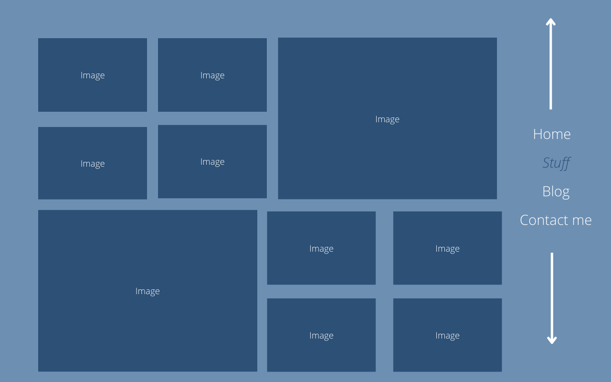
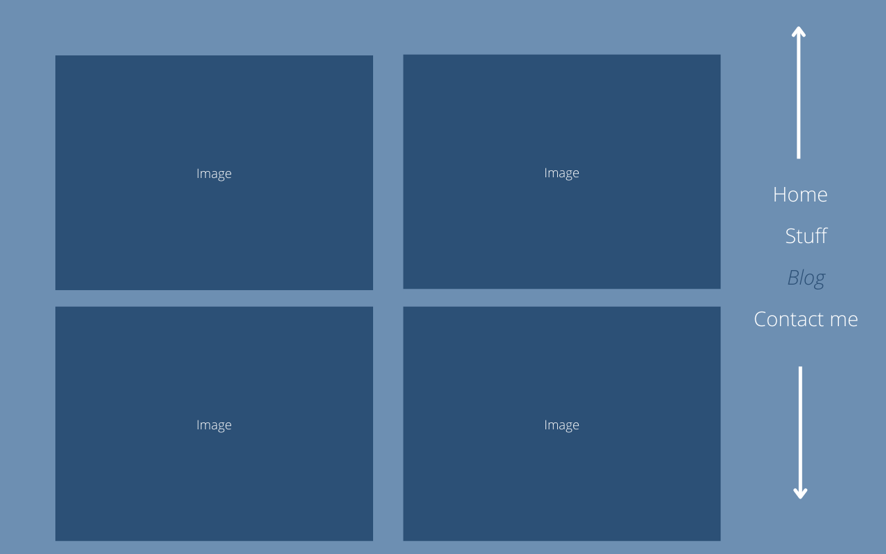
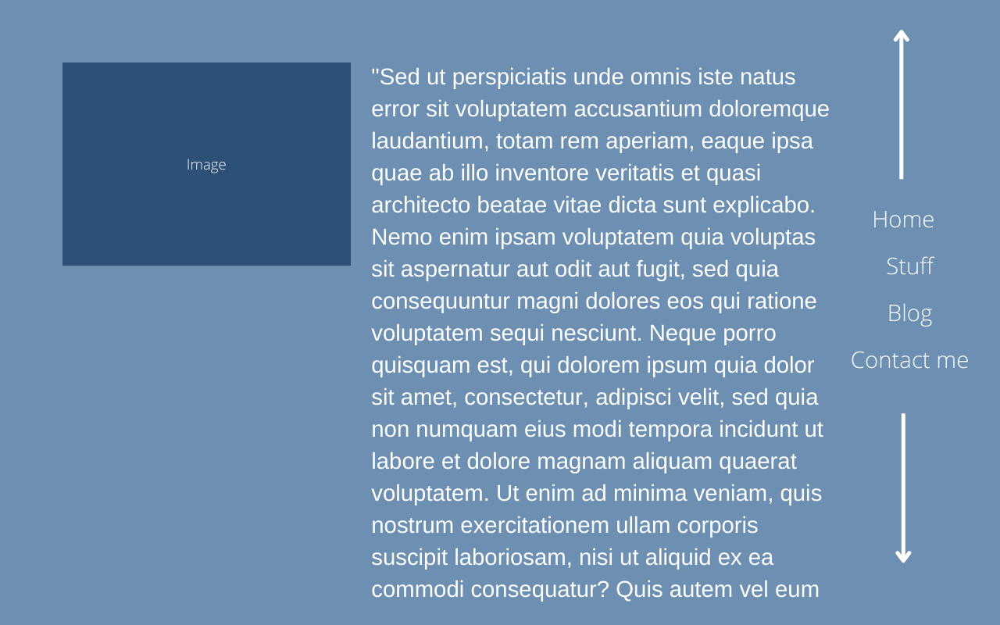

For the home page, I wanted to go super plain and calm. I was actually inspired by another developers webpage, Wendy Ju's page. I thought the plain, cool colour would convey a sense of professionalism. The large text, to the left of the screen is meant to let viewers know they should read that first, before looking at the nav bar.
The nav bar being on the right hand side was another inspiration from Wendy Ju, I wanted my landing page to be scrollable and I thought Ju's page made it clear that you should scroll. I included arrows in my design, in case users weren't completely aware of the scroll.
There weren't many changes from my original design to the one I ended up with, but something that did change is the nav bar. I had a lot of technical issues and when I started running out of time, I just got rid of it.
Another thing that changes is the back button - in creating my wireframe I didn't think about needing javescript and last minute I had to throw a back button on there, which is not a good time. But, again, I was running out of time and I needed to prioritize.
As for this assignment, in relation to the last one: I have nothing of the previous website. I started over completely.
I wanted my gallery page to contain a couple screenshots of each game I was presenting. I subscribe to a game developers podcast that recommends having three games on your portfolio website, and I've only got two that I feel like showing off.
In comparison to the final, the main reason I didn't alternate the sides comes down to technical difficulty. I really struggle with switching between C# and html, I don't know why. I spent most of the development time working on my game - not because of priorities, but because I couldn't sleep without finishing my game - which made it really difficult for me to work on the technical parts of this website.
I'm pretty happy with the gallery section, because I really struggled to get those overlays working and I'm quite proud of how they look and work. I do think that I should have made it more clear that you could click on them to get to their pages.
The blog section stayed about the same, except the resolution of the images. I also ended up lining up three in aline, because I thought that looked better with the new height and width. I also swapped out from images to icons, because I was a bit worried about unity in my webpage. I originally had photographs as the covers, but it really messed with the colour scheme of the website.
In terms of the blog section: I do like the one I ended up with, it was fun to include a wider range of pallettes even if it was hard to find the right colours. Again, happy with the overlay, and maybe think I should have indicated a bit more clearly that they can be clicked on. It also made me think that I should maybe add a blue tint to my game images but I wasn't quite ready for that.
This design of the blog page was inspired by a bunch of recipe blogs that I visited -none interesting enough to really mention. The original idea featured as photograph in the beginning of the blog post but as I went through the blogs that I wrote, none of them really had relevant photographs.
Another reason this changed is the change in the home page - I replaced those photos with icons and I thought it would really disrupt the website's unity if I had irrelevant photographs on each of my blog pages
The colour palette for this website was inspired by the previous website - I picked blue because it conveys intelligence and professionalism. And I went for the shade of blue I did because it seemed calming and knowing. Blue is also my favourite colour. The other colours - more green than blue - were created using adobe. I needed to find colours for my blog icons and I needed them to feel like they fit both the darker shade and the lighter, background shade. Overall, I like them, but I might consider going more purple for my next iteration of the website. I thought the purple would be too feminine (as a genderqueer person, femininity is my biggest fear) and I thought green would come off more professional (is there a connextion between masculinity and professionalism? Probably.)